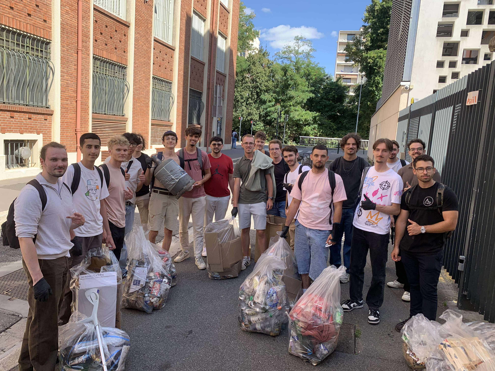
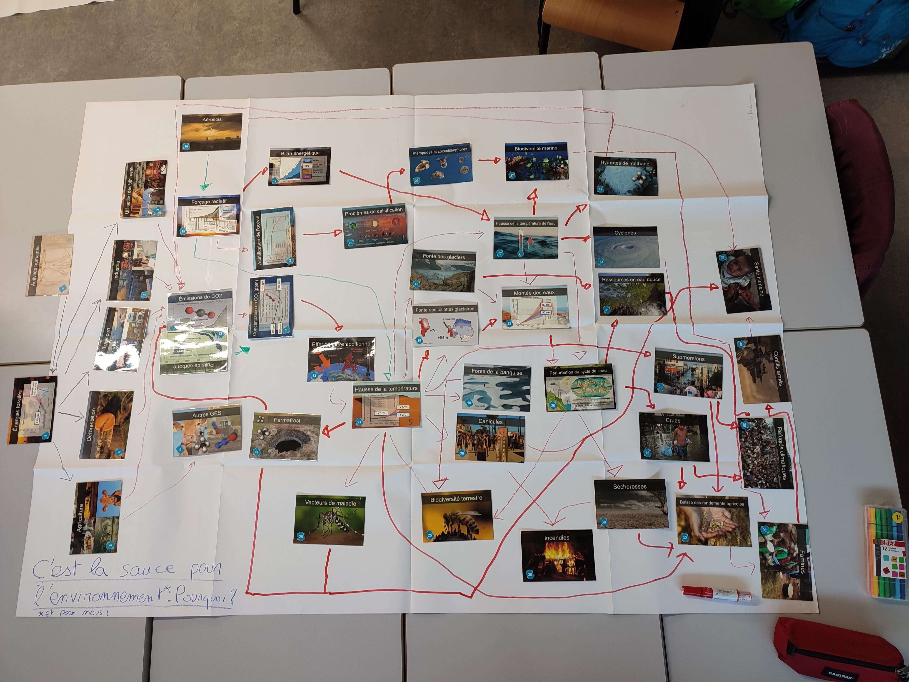

ENSEEIHT e-Portfolio
Mobilité Internationale
Engagement ▾
Développement de Carrière ▾
EN
Mes actions pour l’environnement


Participation à la Fresque du Climat 🌍
Votre navigateur ne supporte pas la lecture de vidéos.